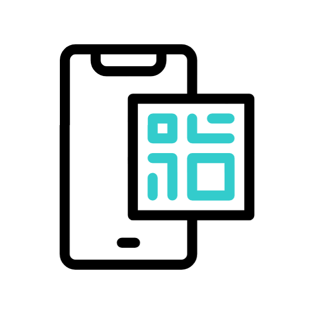

Bienvenidos!
RegistrAPP es tu solución ideal para el registro de asistencia en clases presenciales.
Con nuestra app, los docentes generan un código QR que los alumnos escanean con sus móviles
para registrar su presencia de manera rápida y precisa. Simplifica el proceso y elimina
errores con una herramienta fácil de usar en Android e iOS.